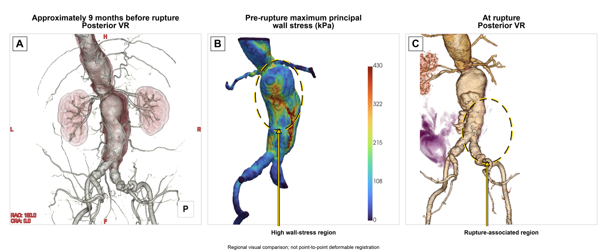
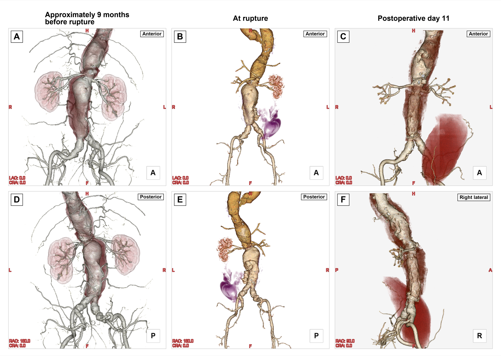
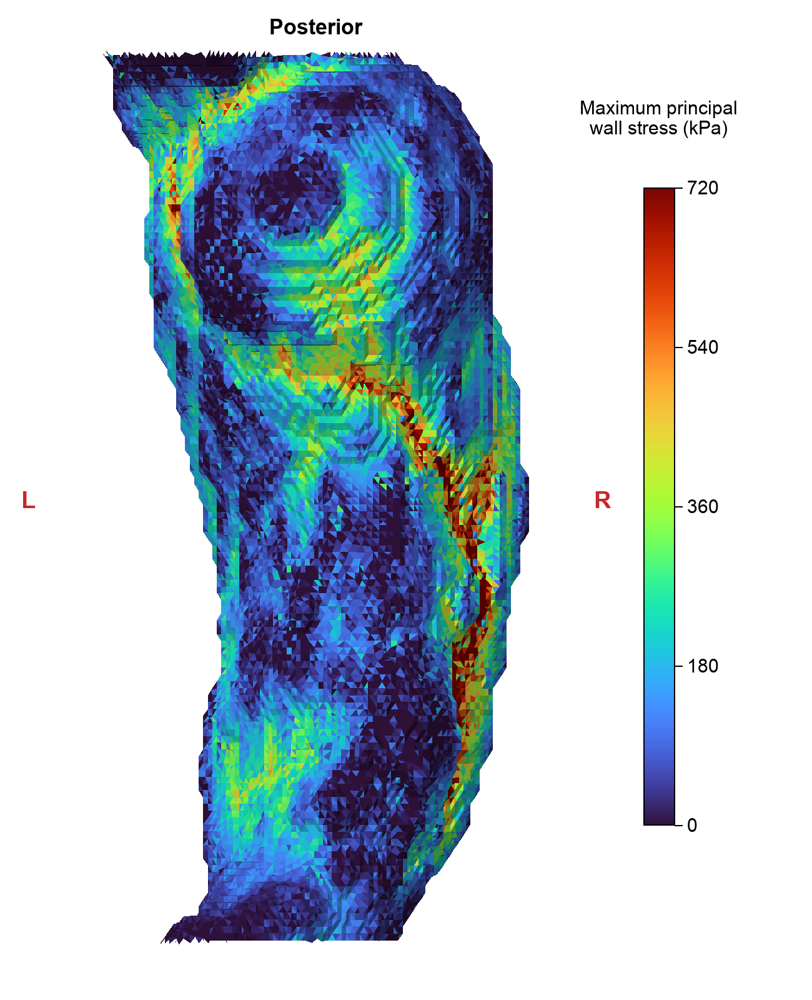
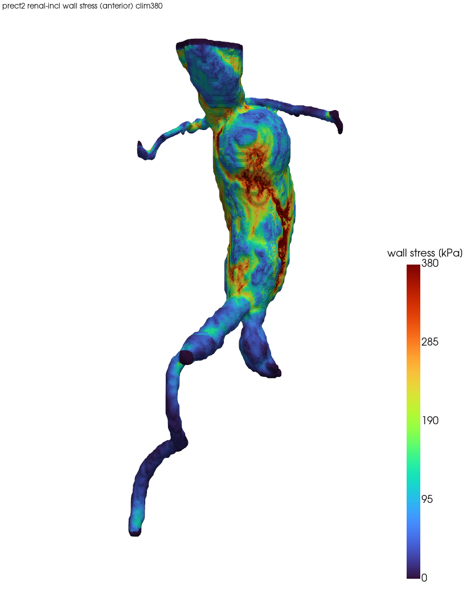
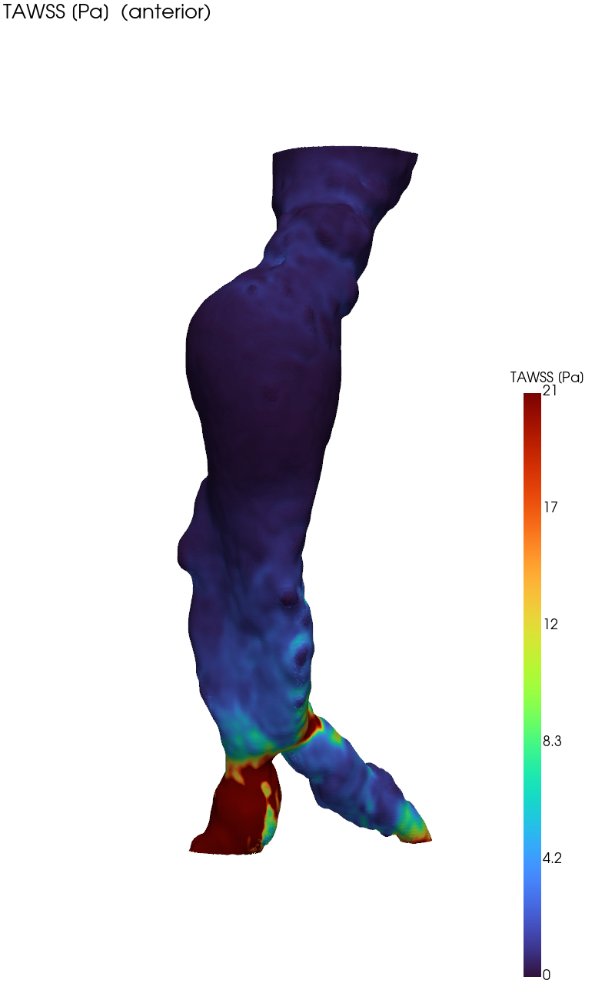
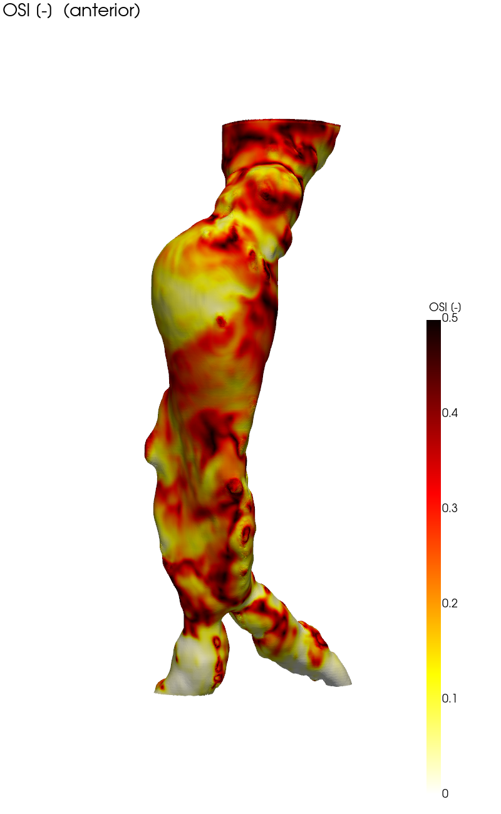
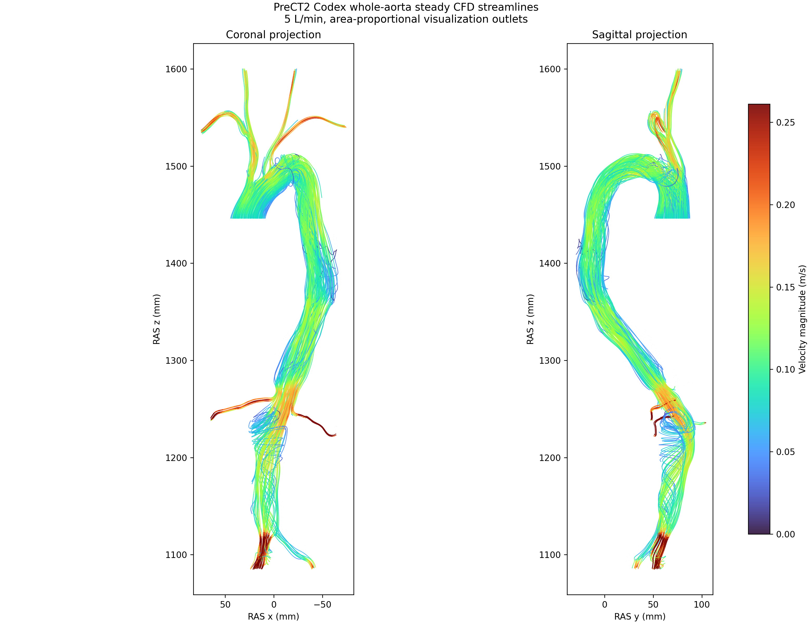

0 概要
同一患者の腎下部腹部大動脈瘤について、破裂の約9.5か月前の待機CTから血流(CFD)・壁応力(FEA)を計算し、 実際の破裂関連部位（後壁・左・分岐部から約5cm頭側）および術後経過と比較した後ろ向き解析。
- 左後壁の局所的な応力上昇域が、後の破裂関連形態と近い頭尾方向レベルにみられた。
- 一方、全体最大値は前壁にあり、posterior面の応力負荷も右側が左側より高かったため、破裂部位を予測したとは結論しない。
- 破裂前 → 破裂 → 術後の3時点で瘤の増大・破裂・修復を三次元的に可視化。
- 血流CFDでは瘤中央が低WSS＋高OSI（血栓形成環境）。壁応力（破裂力）と合わせ二面から評価。
臨床経過：2025年5月CTA後、患者本人が経過観察を希望したため待機手術は行われなかった。血管リスク因子は高血圧・高脂血症で、降圧薬およびスタチンを内服していた。
★ 論文用 Figure（投稿パッケージ）
同一症例の投稿用に整えた主要 Figure（相対表記・匿名化済み）。Figure 2は最大主応力を真のposterior方向から再描画し、再検証後の保守的な解釈に更新済み。


1 自然史 — 大動脈3時点 3D再構成
動脈相CTから大動脈をセグメントし、同一配色・同一視点で比較。瘤の増大 → 破裂 → 人工血管置換が読み取れる。

2 壁応力 FEA（探索的モデル）
破裂前CTAから外側の血栓含有瘤形状を抽出し、公称壁厚1.8 mmの中空壁モデルを作成。線形弾性 E=2 MPa, ν=0.45、 内圧16 kPa（120 mmHg）、近位・遠位切断面固定。最終モデルは235,180四面体で、外表面の最大主応力を評価した。

参考可視化：以下の回転図・動画は別途作成した腎動脈込みモデルのvon Mises応力表示であり、上の最大主応力図およびFigure 2Bとは異なる。

| 最大主応力（最終モデル） | 値 (kPa) |
|---|---|
| 外表面・面積加重平均 | 155.9 |
| 外表面 p95 / p99 | 444.2 / 718.6 |
| 左posterior / 右posterior p95 | 351.4 / 550.5 |
3 破裂部位との照合
術中所見と破裂時CTAから同定した左後壁の破裂関連部位を、腎動脈、分岐部、瘤輪郭をランドマークとして術前posterior壁応力図と視覚的に比較した。
- 観察所見：左後壁の局所的応力上昇域が、後の破裂関連形態と近い頭尾方向レベルにみられた。
- 不一致：全体最大値は前壁で、右posterior p95（550.5 kPa）は左posterior p95（351.4 kPa）より高値だった。
- 位置づけ：非剛体点対点位置合わせ・術野とCTAの空間登録は未実施。単一例のpost hocな視覚比較であり、破裂部位予測の検証ではない。
- 壁応力は壁に加わる力を表す一方、患者固有の局所壁強度は測定していない。応力単独では破裂位置を決定できない。
| 領域 | p95 (kPa) | raw maximum (kPa) |
|---|---|---|
| 左posterior | 351.4 | 899.7 |
| 右posterior | 550.5 | 2078.7 |
| 左anterior | 535.0 | 2212.8 |
| 右anterior | 356.4 | 1064.7 |
4 血行力学 CFD
拍動流CFDで TAWSS/OSI/RRT を評価。瘤中央は低WSS＋高OSI＝血栓形成・壁変性の環境。


- 入口波形が三相性（逆流を含む）のため拡張期に壁全体でWSSが反転しOSIが底上げ。生理的には妥当だが局所識別力は乏しい。
- このCFDは流体側のWSS指標を評価する別解析であり、Figure 1–3の破裂関連部位比較には使用していない。
参考：全大動脈CFD（可視化用）

5 方法（詳細）
SimVascular 非依存の自作パイプライン。オープンソース（TotalSegmentator / OpenFOAM / scikit-fem / meshpy）のみで、 セグメンテーション → 幾何・メッシュ → 血流CFD → 壁応力FEA → 破裂照合を再現可能な形で構成した。
5.1 画像・セグメンテーション
- 造影CT（動脈相）を dcm2niix で DICOM→NIfTI 変換。
- TotalSegmentator で大動脈・左右腸骨動脈・左右腎動脈ほかを自動抽出し、AAA嚢〜腎ネック〜分岐〜腸骨を統合した解析マスクを作成。
5.2 幾何・メッシュ生成
- マスクを平滑化し marching cubes で内腔（lumen）表面を再構成、面数をデシメーション（約2mm解像度）。
- CFD：内腔をそのまま流体領域として体積メッシュ化。
- FEA（中空壁モデル）：外側の血栓含有瘤形状を物理座標で再構成し、公称壁厚1.8 mm（計測された表面間距離の中央値1.83 mm）の中空壁を四面体メッシュ化。最終モデルは235,180要素。
5.3 血流CFD（OpenFOAM pimpleFoam）
非定常・非圧縮 pimpleFoam（OpenFOAM v2512）で、823,279セルの腎下部モデルを3心拍解析し、最終心拍から内腔壁面上の TAWSS/OSI/RRT を算出した。
| 項目 | 設定 |
|---|---|
| ソルバ | pimpleFoam（PIMPLE・非定常非圧縮） |
| 乱流 | k-ω SST（RANS） |
| 血液物性 | Newtonian, ρ = 1060 kg/m³, μ = 0.0035 Pa·s |
| メッシュ | 823,279セル |
| 入口 | 腎下部・三相性拍動流量波形（平均1.2 L/min、flowRateInletVelocity, Qwave.dat） |
| 出口 | 静圧 p = 0（RCR 未使用） |
| 壁 | no-slip・剛体壁 |
| 並列 | scotch 8分割 MPI |
| 時間積分 | 1心拍0.9秒（約67 bpm）。3心拍を計算し、最終心拍の周期平均（fieldAverage）で WSS 統計を算出 |
5.4 壁応力FEA（scikit-fem）
- 中空壁シェルを線形弾性体としてモデル化（scikit-fem・四面体1次要素）。
- 材料：E = 2 MPa, ν = 0.45（動脈壁の近似・準非圧縮）。
- 荷重：内腔面に一様内圧 P = 16 kPa（120 mmHg）。境界条件：近位・遠位切断面を固定。
- 主要出力：切断端を除外した外表面の最大主応力。局所最大値はメッシュ依存性が高いため、面積加重平均およびp95/p99を重視。
- 参考動画は別モデルのvon Mises応力を内圧80↔120 mmHgで線形スケールした表示（色変化のみ、変位ワープなし）。
5.5 破裂照合・可視化
- 術中所見と破裂時CTAで同定した破裂関連部位（後壁・左・分岐部+約5cm）を、腎動脈・分岐部・瘤輪郭を用いて破裂前モデルと視覚比較。非剛体点対点位置合わせは未実施。
- 可視化は turbo 配色、回転動画に APLR（前後左右）方向インジケーターを付した。
6 限界
- 壁：厚さ一様1.8mm・患者固有壁厚／材料特性／局所壁強度を未測定・線形弾性。ILTの荷重伝達を明示的にモデル化していない。
- 境界条件：切断端固定と一様圧負荷を用いた探索的モデルで、局所最大値にはメッシュ依存性がある。
- 時間差：解析は破裂の約9.5か月前の幾何。破裂時までの growth は未反映。
- CFD：汎用入口波形・出口 p=0（RCR未）・Newtonian。全大動脈CFDは可視化用。
- 単一例・仮説生成的。時点間の非剛体位置合わせと術野の空間登録を行っておらず、破裂部位の予測精度を示すものではない。
Acknowledgements：Not applicable.
Funding：なし。Competing interests：なし。
解析：OpenFOAM(pimpleFoam) ＋ scikit-fem パイプライン, TotalSegmentator。OpenAI Codexは著者監督下でコード作成支援、数値の照合、原稿・Figure整備に使用し、全内容は著者が検証し責任を負う。生成・更新 2026年。